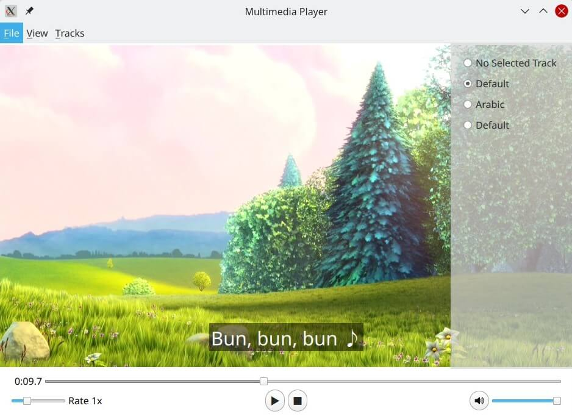
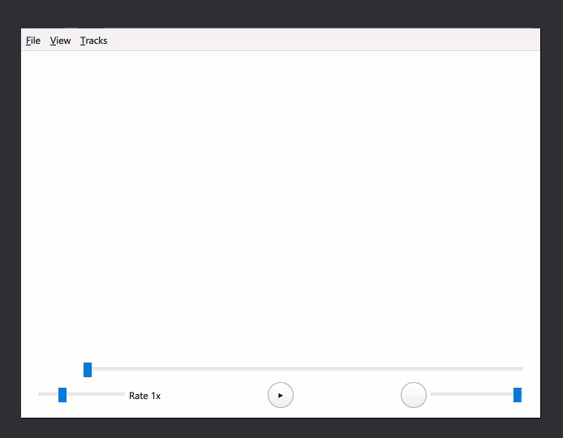
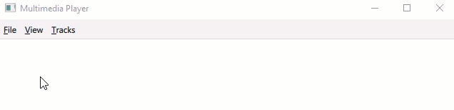
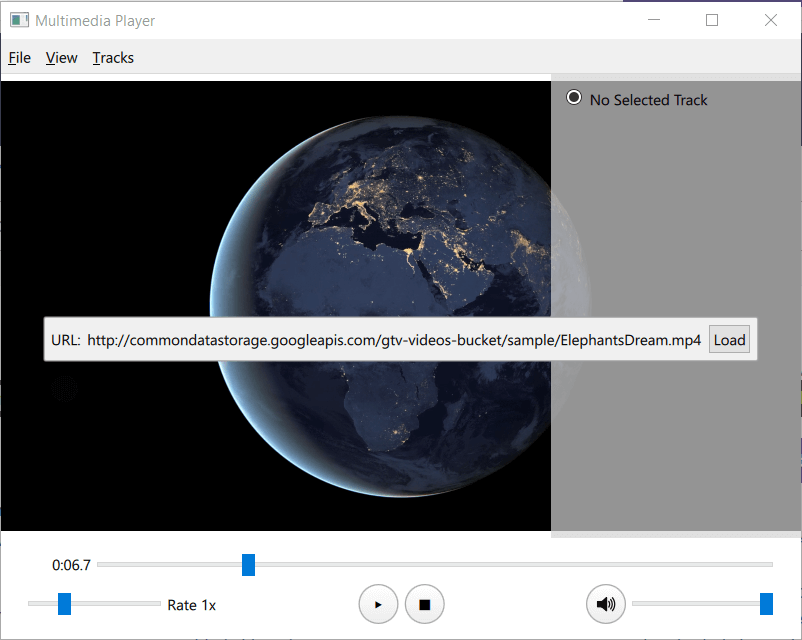
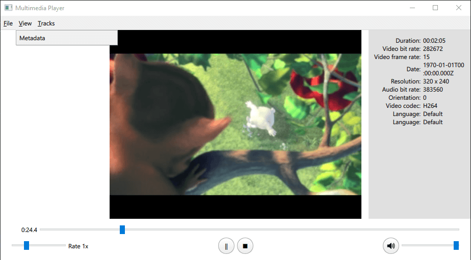
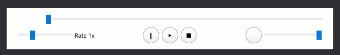
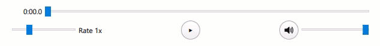

QML Media Player Example
Playing audio and video using Qt Quick.

This example demonstrates a simple multimedia player that can play audio and video files using various codecs.
Running the Example
To run the example from Qt Creator, open the Welcome mode and select the example from Examples. For more information, visit Building and Running an Example.
Overview
At its core this is a QML application, see Getting Started Programming with Qt Quick for information specific to that. This documentation is focused on how this example utilizes the Qt Multimedia QML Types.

Using MediaPlayer and VideoOutput
In main.qml a MediaPlayer instance is connected to a VideoOutput to play back the video:
MediaPlayer {
id: mediaPlayer
function updateMetadata() {
metadataInfo.clear();
metadataInfo.read(mediaPlayer.metaData);
metadataInfo.read(mediaPlayer.audioTracks[mediaPlayer.activeAudioTrack]);
metadataInfo.read(mediaPlayer.videoTracks[mediaPlayer.activeVideoTrack]);
}
videoOutput: videoOutput
videoOutput is declared like so:
VideoOutput {
id: videoOutput
property bool fullScreen: false
anchors.top: fullScreen ? parent.top : menuBar.bottom
anchors.bottom: playbackControl.top
anchors.left: parent.left
anchors.right: parent.right
TapHandler {
onDoubleTapped: {
parent.fullScreen ? showNormal() : showFullScreen()
parent.fullScreen = !parent.fullScreen
}
onTapped: {
metadataInfo.visible = false
audioTracksInfo.visible = false
videoTracksInfo.visible = false
subtitleTracksInfo.visible = false
}
}
}
PlayerMenuBar

This QML type handles media selection from a url or local file, exiting the application, viewing meta data, and the selection of available video, audio or subtitle tracks.
Accessing the mediaPlayer object is done through properties:
required property MediaPlayer mediaPlayer
required property VideoOutput videoOutput
required property MetadataInfo metadataInfo
required property TracksInfo audioTracksInfo
required property TracksInfo videoTracksInfo
required property TracksInfo subtitleTracksInfo
fileDialog
A FileDialog, fileDialog, is created with an onAccepted function that will stop mediaPlayer, load the source by setting the source property and then play it automatically:
FileDialog {
id: fileDialog
title: "Please choose a file"
onAccepted: {
mediaPlayer.stop()
mediaPlayer.source = fileDialog.currentFile
mediaPlayer.play()
}
}
This is triggered in the Menu File, which is a child of the MenuBar:
MenuBar {
id: menuBar
anchors.left: parent.left
anchors.right: parent.right
Menu {
title: qsTr("&File")
Action {
text: qsTr("&Open")
onTriggered: fileDialog.open()
loadUrl

While urlPopup handles prompting and capturing a url, it is the loadUrl function that interacts with mediaPlayer like so:
function loadUrl(url) {
mediaPlayer.stop()
mediaPlayer.source = url
mediaPlayer.play()
}
Getting meta data

In the declaration of mediaPlayer, in main.qml, there is the function updateMetadata():
function updateMetadata() {
metadataInfo.clear();
metadataInfo.read(mediaPlayer.metaData);
metadataInfo.read(mediaPlayer.audioTracks[mediaPlayer.activeAudioTrack]);
metadataInfo.read(mediaPlayer.videoTracks[mediaPlayer.activeVideoTrack]);
It is called in the following places:
onMetaDataChanged: { updateMetadata() }
onTracksChanged: {
audioTracksInfo.read(mediaPlayer.audioTracks);
audioTracksInfo.selectedTrack = mediaPlayer.activeAudioTrack;
videoTracksInfo.read(mediaPlayer.videoTracks);
videoTracksInfo.selectedTrack = mediaPlayer.activeVideoTrack;
subtitleTracksInfo.read(mediaPlayer.subtitleTracks);
subtitleTracksInfo.selectedTrack = mediaPlayer.activeSubtitleTrack;
updateMetadata()
}
Reading MetaData is done by the MetadataInfo type's read() function
function read(metadata) {
if (metadata) {
for (var key of metadata.keys()) {
if (metadata.stringValue(key)) {
elements.append(
{ name: metadata.metaDataKeyToString(key)
, value: metadata.stringValue(key)
})
}
}
}
}
The information is displayed via an Overlay item.
Tracks information and control
This is defined in TracksInfo.qml and reading available tracks is done in a similar way to MetadataInfo:
function read(metadataList) {
var LanguageKey = 6;
elements.clear()
elements.append(
{ language: "No Selected Track"
, trackNumber: -1
})
if (!metadataList)
return;
metadataList.forEach(function (metadata, index) {
var language = metadata.stringValue(LanguageKey);
var label = language ? metadata.stringValue(LanguageKey) : "track " + (index + 1)
elements.append(
{ language: label
, trackNumber: index
})
});
}
To set a track, the property selectedTrack is set like so:
ListView {
id: trackList
visible: elements.count > 0
anchors.fill: parent
model: elements
delegate: RowLayout {
width: trackList.width
RadioButton {
checked: model.trackNumber === selectedTrack
text: model.language
ButtonGroup.group: group
onClicked: selectedTrack = model.trackNumber
}
}
}
The onSelectectedTrackChanged signal, in each relevant TracksInfo instance in main.qml, is what makes changes to mediaPlayer like so:
id: audioTracksInfo
anchors.right: parent.right
anchors.top: videoOutput.fullScreen ? parent.top : menuBar.bottom
anchors.bottom: playbackControl.opacity ? playbackControl.bottom : parent.bottom
visible: false
onSelectedTrackChanged: mediaPlayer.activeAudioTrack = audioTracksInfo.selectedTrack
playbackControlPanel

This item has controls for Playback control, Play Pause Stop, Playback rate control and Playback seek control.
Playback control
This qml type handles media playback and interacts with the MediaPlayer in main.qml.
Here are the property definitions.
required property MediaPlayer mediaPlayer
property int mediaPlayerState: mediaPlayer.playbackState
Connections:
target: mediaPlayer
function onPlaybackStateChanged() { updateOpacity() }
function onHasVideoChanged() { updateOpacity() }
}
Play Pause Stop

Play, stop and pause interactions with the MediaPlayer object are done like so:
RoundButton {
id: pauseButton
radius: 50.0
text: "\u2016";
onClicked: mediaPlayer.pause()
}
RoundButton {
id: playButton
radius: 50.0
text: "\u25B6";
onClicked: mediaPlayer.play()
}
RoundButton {
id: stopButton
radius: 50.0
text: "\u25A0";
onClicked: mediaPlayer.stop()
}
}
Playback states done using playbackstate like so:
State {
name: "playing"
when: mediaPlayerState == MediaPlayer.PlayingState
PropertyChanges { target: pauseButton; visible: true}
PropertyChanges { target: playButton; visible: false}
PropertyChanges { target: stopButton; visible: true}
},
State {
name: "stopped"
when: mediaPlayerState == MediaPlayer.StoppedState
PropertyChanges { target: pauseButton; visible: false}
PropertyChanges { target: playButton; visible: true}
PropertyChanges { target: stopButton; visible: false}
},
State {
name: "paused"
when: mediaPlayerState == MediaPlayer.PausedState
PropertyChanges { target: pauseButton; visible: false}
PropertyChanges { target: playButton; visible: true}
PropertyChanges { target: stopButton; visible: true}
}
]
Playback seek control
Defined in PlaybackSeekControl.qml, this component comprises of an item with a Text, mediaTime, and Slider, mediaSlider, in a RowLayout.
mediaTime uses MediaPlayer's position property like so:
Text {
id: mediaTime
Layout.minimumWidth: 50
Layout.minimumHeight: 18
horizontalAlignment: Text.AlignRight
text: {
var m = Math.floor(mediaPlayer.position / 60000)
var ms = (mediaPlayer.position / 1000 - m * 60).toFixed(1)
return `${m}:${ms.padStart(4, 0)}`
}
}
mediaSlider uses the MediaPlayer seekable, duration, and position properties like so:
Slider {
id: mediaSlider
Layout.fillWidth: true
enabled: mediaPlayer.seekable
to: 1.0
value: mediaPlayer.position / mediaPlayer.duration
onMoved: mediaPlayer.setPosition(value * mediaPlayer.duration)
}
Playback rate control
This type is defined in PlaybackRateControl.qml like so:
Slider {
id: slider
Layout.fillWidth: true
snapMode: Slider.SnapOnRelease
enabled: true
from: 0.5
to: 2.5
stepSize: 0.5
value: 1.0
onMoved: { mediaPlayer.setPlaybackRate(value) }
}
Text {
text: "Rate " + mediaPlayer.playbackRate + "x"
Audio control
This type is defined in AudioControl.qml, and utilizes the muted and volume properties of the AudioOutput instantiated within the MediaPlayer, which is instantiated in main.qml.
required property MediaPlayer mediaPlayer
property bool muted: false
property real volume: volumeSlider.value/100.
implicitHeight: buttons.height
RowLayout {
anchors.fill: parent
Item {
id: buttons
width: muteButton.implicitWidth
height: muteButton.implicitHeight
RoundButton {
id: muteButton
radius: 50.0
icon.source: muted ? "qrc:///Mute_Icon.svg" : "qrc:///Speaker_Icon.svg"
onClicked: { muted = !muted }
}
}
Slider {
id: volumeSlider
Layout.fillWidth: true
Layout.alignment: Qt.AlignVCenter
enabled: true
to: 100.0
value: 100.0